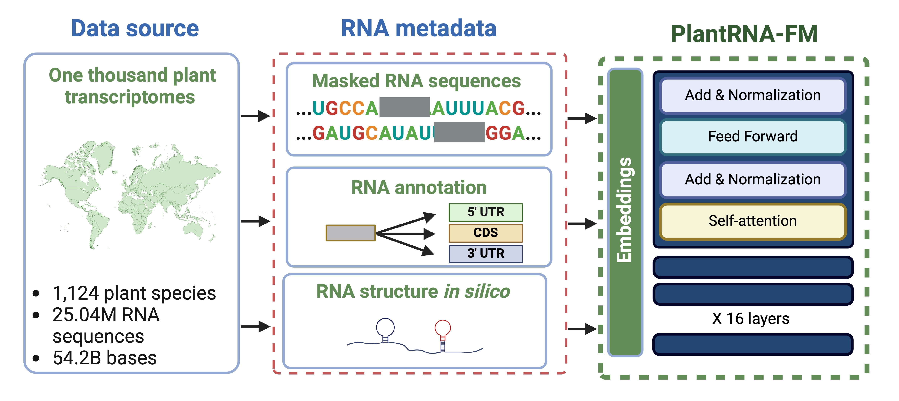
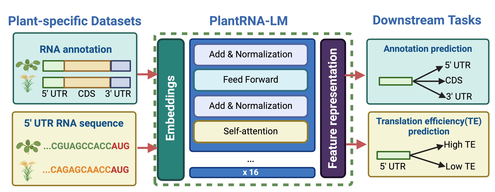
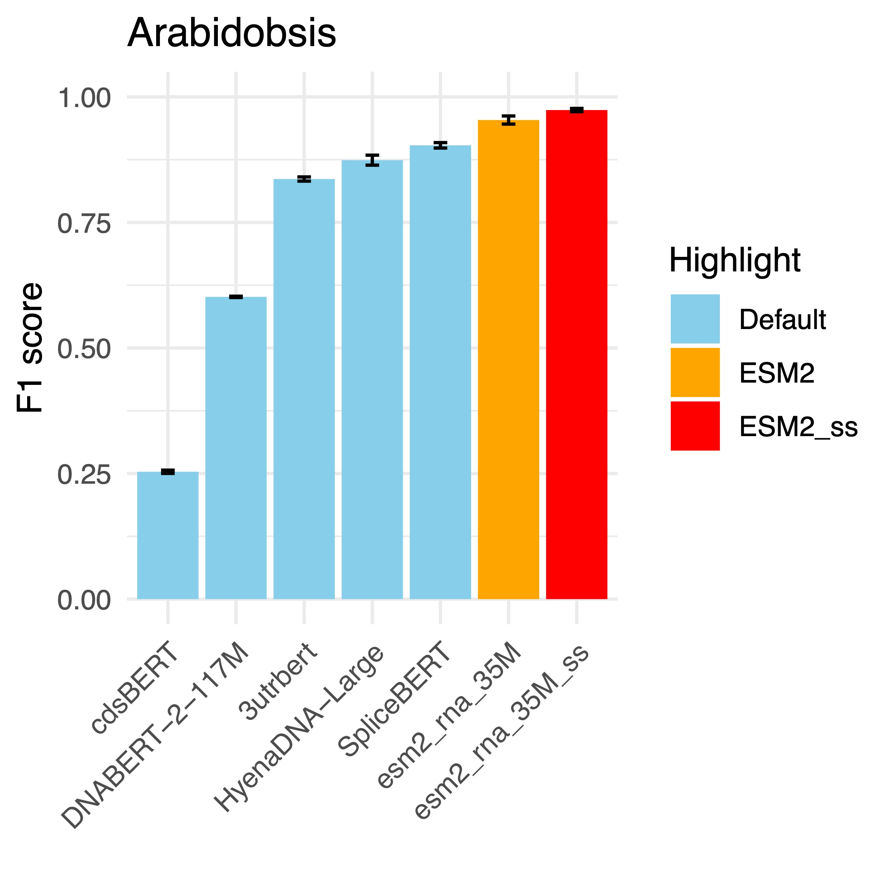
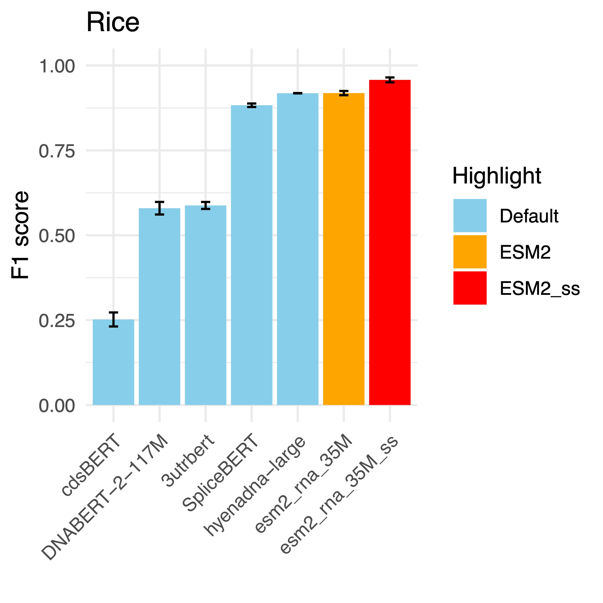
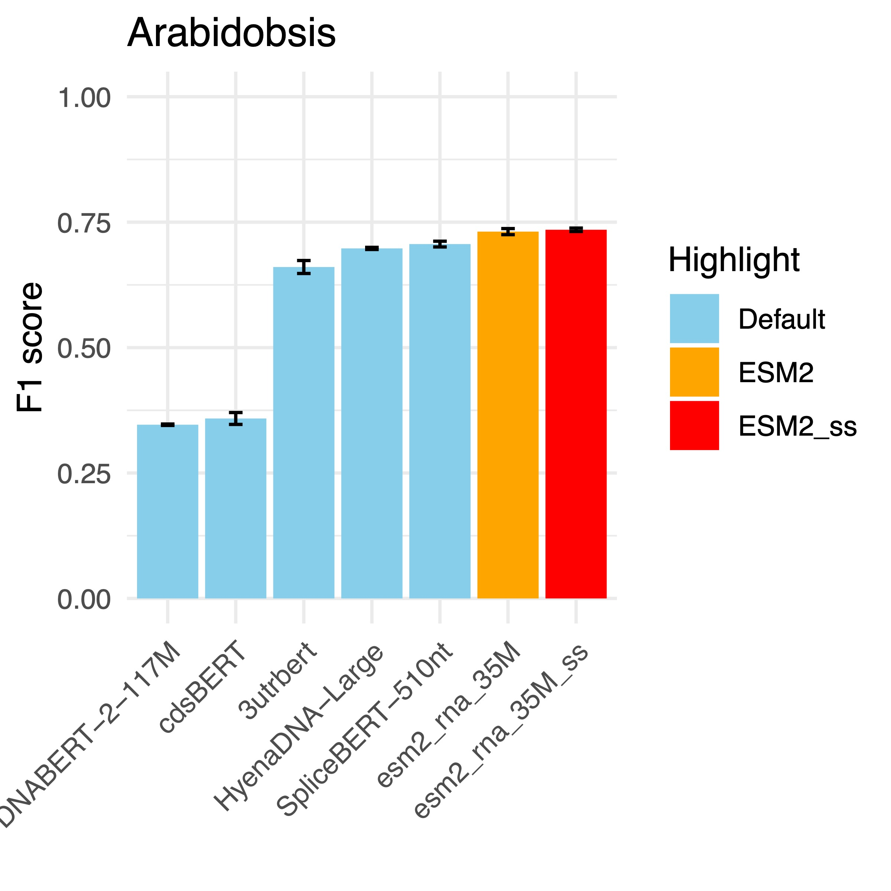
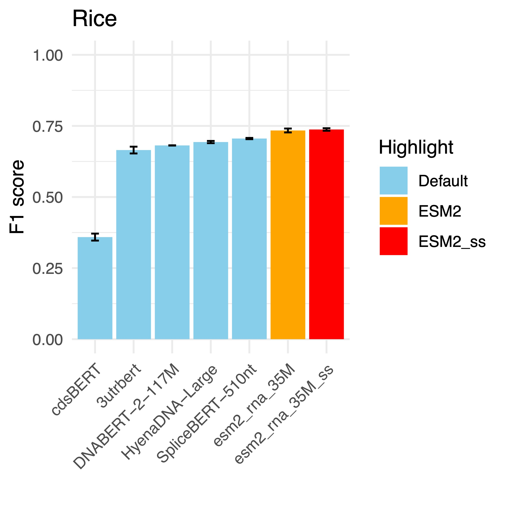
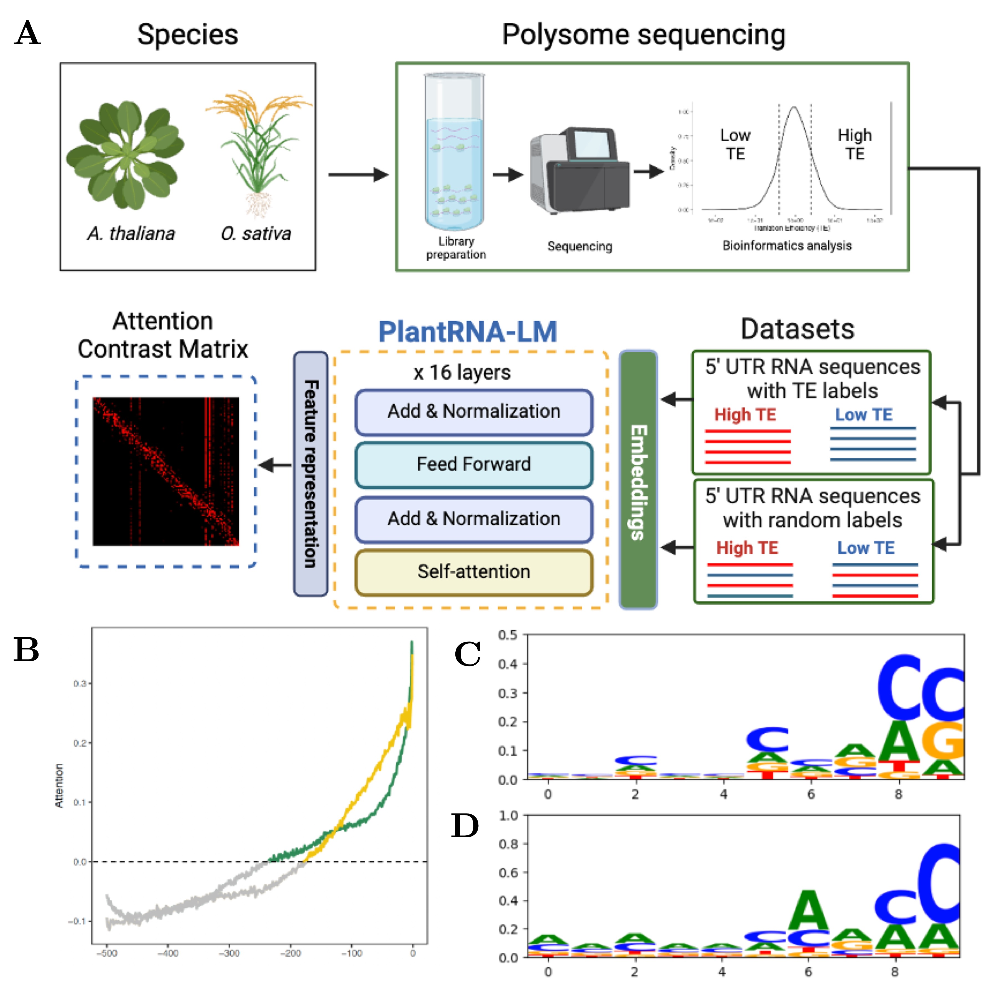
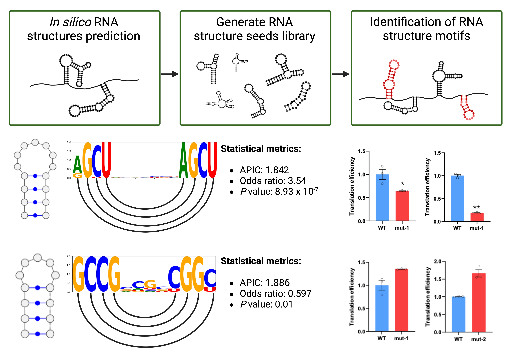

Plant RNA Foundation Model Project #
This website maintains the supplementary materials related to the following paper:
Haopeng Yu, Heng Yang+, Yiliang Ding, Ke Li “PlantRNA-FM: A Plant RNA Foundation Model for Exploration RNA Functions in Plants”, submitted to Nature Machine Intelligence, under review, 2024.

The complex language of plant RNA encodes a vast array of biological regulatory elements that orchestrate crucial aspects of plant growth, development, and adaptation to environmental stresses. Recent advancements in large-scale pre-trained foundation models (FMs) have demonstrate ed their immense potential to decipher the complex language of nucleotide sequences. In this study, we introduce PlantRNA-FM, a one-of-a-kind FM designed specifically for plant RNA research. PlantRNA-FM is a specialised plant RNA foundation model pre-trained on an extensive dataset spanning 1,124 diverse plant species. PlantRNA-FM demonstrated superior performance in plant-specific downstream tasks, such as plant RNA annotation prediction and plant RNA translation efficiency prediction, surpassing state-of-the-art models with F1 score improvements of up to 7.78% and 4.51%, respectively. The inclusion of RNA structure information during the pre-training phase further enhanced the model's performance, highlighting the importance of RNA structure in RNA functions. Moreover, the interpretability of PlantRNA-FM can be leveraged to explain the contribution of RNA sequence composition to downstream tasks. Furthermore, we identified and experimentally validated RNA G-quadruplexes that lead to low translational efficiency. Our findings demonstrate the power of PlantRNA-FM in deciphering the complex regulatory mechanisms encoded in plant RNA sequences, providing new insights into plant biology.
PlantRNA-FM demonstrates superior performance on plant-specific downstream tasks:

- Annotation prediction


- Translation efficiency prediction


PlantRNA-FM has the capability to be explainable.


We are keen on promoting reproducibility and transparency in scientific research. Since this manuscript is currently submitted for possible publication, the source codes used in our empirical study will be publicly available after its acceptance.